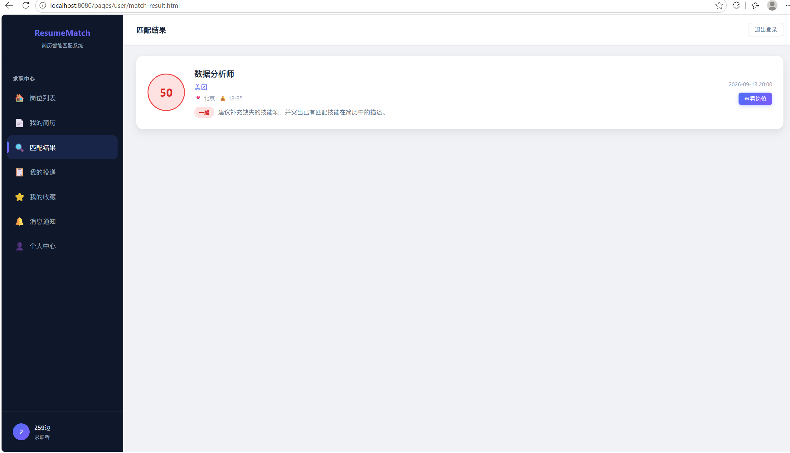
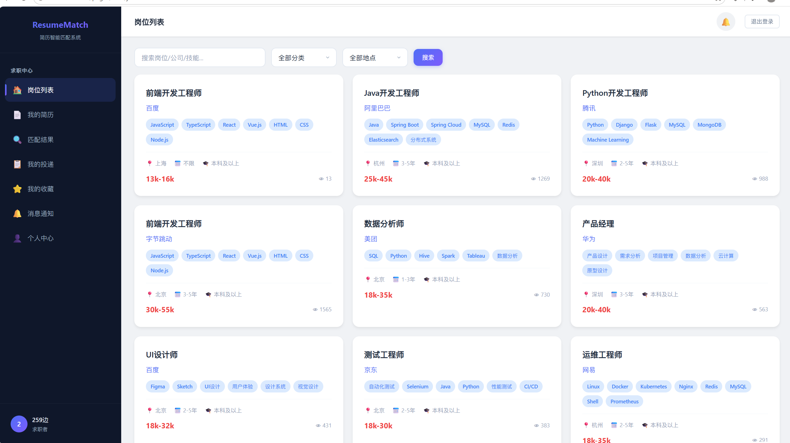
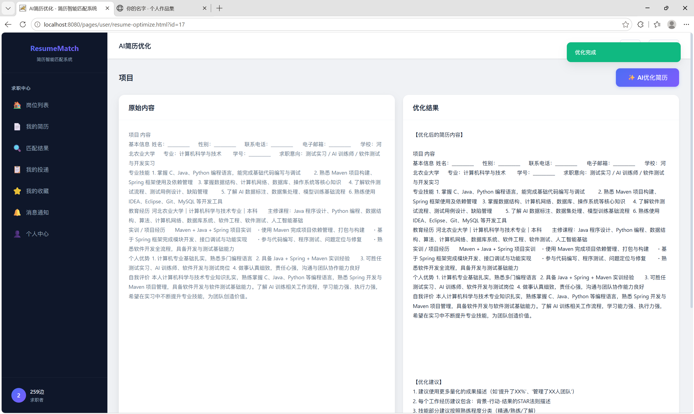
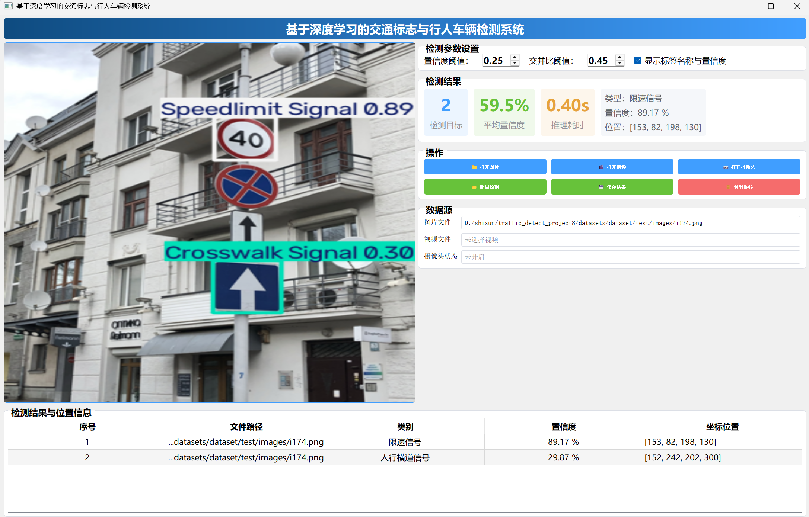
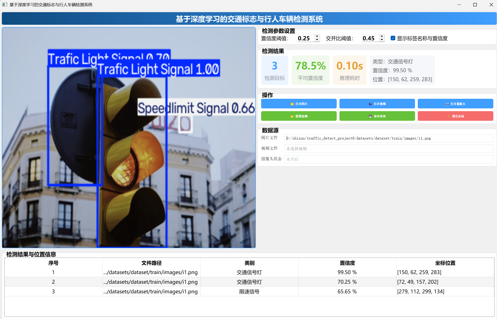
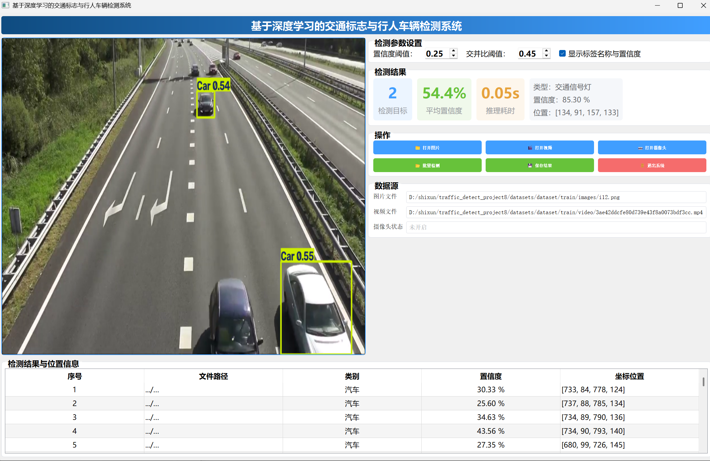

ResumeMatch简历智能匹配系统



前后端分离Web平台，SpringBoot3.2.5 + MyBatis‑Plus + Vue3，接入DeepSeek大模型，实现AI简历优化、双层混合人岗匹配算法，集成阿里云OSS文件存储、ECharts数据可视化大屏。
实现简历多版本快照、岗位收藏、简历投递全业务流程，完整权限控制。
个人介绍｜项目经历｜联系方式



前后端分离Web平台，SpringBoot3.2.5 + MyBatis‑Plus + Vue3，接入DeepSeek大模型，实现AI简历优化、双层混合人岗匹配算法，集成阿里云OSS文件存储、ECharts数据可视化大屏。
实现简历多版本快照、岗位收藏、简历投递全业务流程，完整权限控制。



基于YOLOv8+PyQt5桌面应用，支持图片、视频、摄像头实时推理，识别交通标志、行人、机动车；完成数据集处理、模型调参，多线程UI防止界面卡顿。

负责校园公众号推文撰写、图文排版、素材收集与发布工作。熟练使用公众号编辑器进行版式美化，完成多篇推文的策划与落地，锻炼文字撰写与内容排版能力。